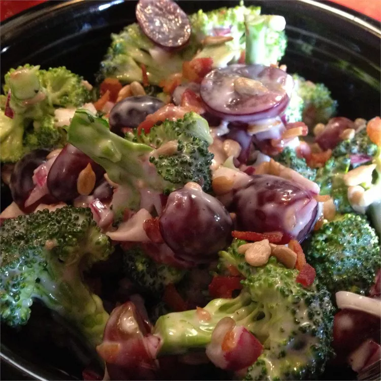

Broccoli Grape Salad

Healthy, fruity, and yummy!
The perfect dish for when you want somethign healthy but also lots of sugar and mayonnaise.
If you make this dish for your family at Thanksgiving, you will need to make it for them every Thanksgiving. Worth it. It's delicious.
Ingredients
- Bacon
- Sunflower Seed Kernels
- Broccoli
- Grapes
- Red Onion
- Mayonnaise
- Apple Cider Vinegar
- White Sugar
- Black Pepper
Steps
- Cook the bacon.
- Combine broccoli, grapes, and onion into one big bowl.
- Whisk mayonnaise, vinegar, sugar, and pepper together in a separate bowl; crumble remaining slice of bacon and fold into dressing.
- Pour dressing over broccoli mixture; toss to coat evenly. Cover the bowl with plastic wrap and refrigerate for flavors to blend, about 2 hours. Sprinkle bacon-sunflower seed mixture over salad before serving; mix well.
Additional details found on AllRecipes.com